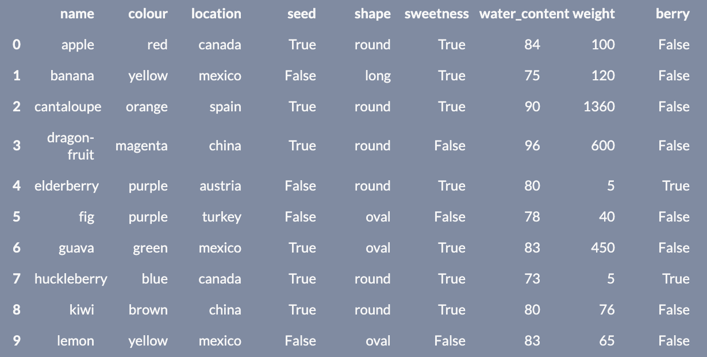

6.1. Exercises
Advanced String Questions
Strings
name colour location seed shape sweetness water_content weight
0 apple red canada True round True 84 100
1 banana yellow mexico False long True 75 120
2 cantaloupe orange spain True round True 90 1360
3 dragon-fruit magenta china True round False 96 600
4 elderberry purple austria False round True 80 5
5 fig purple turkey False oval False 78 40
6 guava green mexico True oval True 83 450
7 huckleberry blue canada True round True 73 5
8 kiwi brown china True round True 80 76
9 lemon yellow mexico False oval False 83 65

Processing Strings in a Dataframe
Instructions:
Running a coding exercise for the first time could take a bit of time for everything to load. Be patient, it could take a few minutes.
When you see ____ in a coding exercise, replace it with what you assume to be the correct code. Run it and see if you obtain the desired output. Submit your code to validate if you were correct.
Make sure you remove the hash (#) symbol in the coding portions of this question. We have commented them so that the line won’t execute and you can test your code after each step.
Use the lego dataframe to help answer the next question.
Let’s practice using the verbs we learned from the lesson to process a string column in our Lego dataset.
Tasks:
- Convert the
namecolumn in thelegodataset to lowercase and overwrite the dataframe by saving it as an object namedlego. - Filter the dataset to find all the Lego sets that contain
"weetabix"in thenamecolumn. - Save this as an object named
lego_weetabix. - Replace the word
"weetabix” in thenamecolumn of thelego_wetabixdataframe with the string"cereal-brand". - Save this in an object called
lego_cereal. - If the row contains the word
"promotional"in thenamecolumn, change the entire value to"cereal-brand freebie". - Display
lego_cereal.